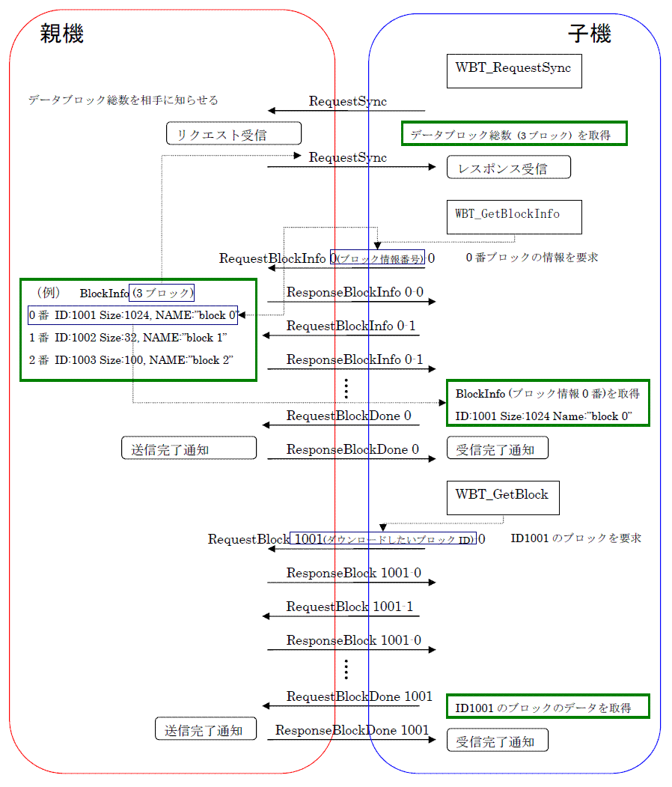
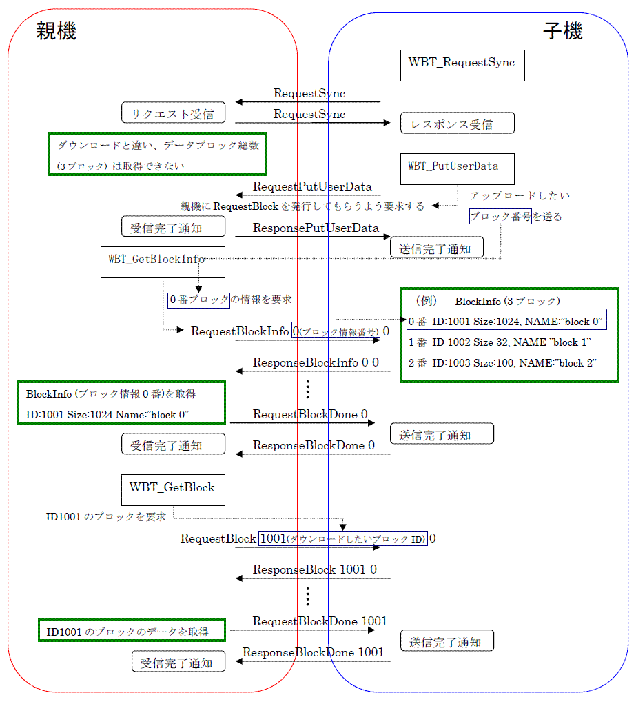

The figure below shows the packet flow during dowload and upload when using WBT.
(Note) Since half-duplex communications are used between parents and children, if an upload and download occur at the same time, the upload takes priority as seen from the child.
Packet flow during download
The following figure shows the packet flow exchanged between parent and child during download.

Packet flow during upload
Although processing flow is essentially only reversed between parent and child as compared to a download, the child must notify the parent by sending block information using WBT_PutUserData when child wants to upload because the upload must be performed as a download to the parent. (If the upload timing is immediately after RequestSync and blocks to be uploaded are fixed, the WBT_GetBlockInfo function may be called as the RequestSync receive callback.Åj
The following figure shows the packet flow exchanged between parent and child during upload.

03/13/2006 Initial version.
CONFIDENTIAL